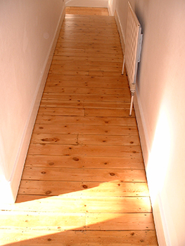

About
If you are looking for a beautiful, smooth, luxurious wooden floor then I can certainly help you!
I'm Paul Thompson and I've worked in the flooring industry for the past 20 years. I opened my own business - The Polished Wood floor Company - way back in the summer of 2001. Over the years I've rebuilt, repaired and restored thousands of wooden floors across the city and around.
Renovating wooden floors is a rewarding job because every working day is all about taking the old and the tired and turning it into something really beautiful. Many of my clients have little idea how much can be achieved. I just love their delight as the transformation takes place from grey and grimy to radiant and intricate. Something lovely that every one will notice.
Beyond my dedication to craftsmanship, I pride myself on delivering the best customer experience I possibly can. I'm friendly and polite, always on time, always start a job on the date that I've agreed and will treat your home with my absolute care and respect. My goal is to create a dazzling transformation within your home with the least possible disruption or inconvenience to yourself or your family.
I've been on the Checkatrade review site for nearly ten years and I've got over 150 fantastic reviews. If you'd like to know what my customers think, please follow the link.
In recent years I've taken the skills I have in staining and distressing wood and I'm now offering bespoke, handcrafted shelving and furniture.


For a completely free and absolutely no obligation quotation please call, email or text at any time.
Services
Sanding traditional boards
Resurfacing hardwood floors
Restoring parquet
Repairs & renovations
Gap-filling
Hearth removal
Staining
Varnish & Oil
Stairs
Draught-proofing
Gap below skirting board
Refurbish with fresh varnish
Gallery
FAQ's
Most old, untreated floors look pretty awful once the carpet has been removed. You can expect dirty, grey, warped boards, some possibly cracked and split. Holes may remain from previous plumbing and heating installations. Many protruding nails are likely, as are patches of old paint and adhesives. Several boards may be loose, misaligned or have been badly cut. All of these problems are commonplace and can easily be solved. The first part of every job involves a thorough inspection of the floor. I’ll check every board is securely nailed down, carry out all manner of repairs to the damaged ones and fill and fix numerous knocks, dents and holes. Warped boards can easily be sanded level, with paint and adhesives removed along the way. Preparation is everything when it comes to producing a fine floor.
Many people have heard horror stories about floor sanding, expecting the air to be thick with dust, dust to pile up against the skirting boards like snowdrifts and to swirl around the house and settle on ever surface. To be fair, old fashioned machinery and much of the more primitive machinery available on the hire market can produce frightening amounts of dust. However, the machinery used by today’s floor sanding professionals is very different. I use the latest German and Swiss machinery which has simply superb dust extraction built in. Furthermore, I use a dust extractor with every power tool I use and vacuum constantly. The dust produced is very minimal and my clients frequently comment on just how little dust there is.
Ideally yes, if at all possible. Because each floor is sanded several times, I need easy access to the whole floor. Similarly when varnishing or oiling. If you can remove all the furniture before I arrive then that would be perfect. If you have any particularly heavy items then leave them until I arrive – I’m more than happy to help move furniture where it would be a struggle for you alone, and I’m an expert at manoeuvring awkward sofa’s through tight doorways! However, there are occasions where it simply isn’t possible to get some pieces of furniture out. In these cases I sand and seal one half of the room, move the furniture onto the treated half and then do the other half.
No, no need, I can do this for you. If you would like me to dispose of the carpet for you then that’s not a problem, although I’d have to charge a little as I have to pay to dump carpet. If, though, you’d like me to cut the carpet into small, manageable pieces, then you take them to the tip yourself (where disposal is free for householders) I can do this for no extra charge.
These are either removed or hammered flush with the board. During the preparation stage (before sanding begins) I generally pull up dozens (or literally hundreds) of nails and tacks. Any left are simply ground away by the machinery.
I can replace any amount of flooring, from a single piece to the entire floor. I using genuine, aged, characterful, reclaimed boards, chosen to match the colour and grain of the rest of your floor. However, damaged boards can often be saved. Cracks can be invisibly glued back together using adhesives which are stronger than the wood itself, or bad bits can be cut out and fresh wood grafted in.
Yes, a previously painted floor can be sanded back to beautiful clean wood, however many layers of paint there are.
This substance was known as ‘stain’ in its' day. When central carpets were popular back in the 1950′S the boards which were left exposed were coated with this stuff, layer upon layer, every few months. Over the decades that followed the black from the underlay of fitted carpets combined to produce the unpleasant ‘tar’ effect. Not a problem though, this can all be sanded away.
The concrete from an old fireplace hearth can be broken up and removed, a new section of joist fitted and boards laid over the top. Rather than just re-boarding the hearth area, I can take every other board up across the length of the floor and move them forward to cover the hearth, filling in the missing boards at either end of the room. This leaves no ugly lines, but instead a lovely job where there is no obvious indication that a hearth ever existed.
With ground floor rooms there can be a draught coming up between the boards. This is because air must circulate freely in the foundations of the building to prevent damp from accumulating. ‘Air bricks’ (ones with holes right through) are fitted in the exterior walls to let fresh air in from outside. In certain houses, filling the gaps can make a tremendous difference to the warmth of a downstairs room. Upstairs rooms are generally less draughty, but filling the gaps will always make some difference. Floors with all the gaps filled do look particularly gorgeous so many of my clients ask me to do this simply on aesthetic grounds. Also quite often people with young children ask me to fill the gaps because kids just love to post things through!
Traditionally gaps are filled with a paste made up from fine wood dust collected in the sanding process. The wood dust is mixed with a cellulose based adhesive/setting agent and then trowelled into the gaps. Usually this will need overnight to set hard. When dry it can be sanded flush with the boards to produce a floor which is completely smooth with no gaps. This works great on floors where the gaps are not too wide and the boards are thick enough not to flex or move at all under foot. In situations with movement or wider gaps a resin/wood dust filler can crack and fall through. Here I recommend rubber strip filler. Rubber filler comes on a roll and is forced deep into the gap, completely sealing it. It is a grey-black colour and therefore not really visible once fitted and varnished over. As the rubber remains permanently flexible, it flexes with the natural movement of the floor and doesn't falls out.
Generally I’ll sand your floor five times over. I start with a very course grit that quickly sands the boards completely flat and level with one another. The following four grits become increasingly fine, each removing the scratches left by the last. The final sand is with a very gentle grit that leaves a beautifully smooth, polished finish. The edges are treated similarly, though with a different machine, sanding right underneath the edge of the skirting board and beneath radiators. I use a triangular corner sander to finish the job, getting right into the corners and behind the pipes. I have a number of different machines, allowing me to sand virtually any tricky area – particularly useful for getting right behind washbasins and toilets when working on bathrooms.
Parquet flooring looks truly magnificent when freshly sanded. Because the grain of parquet blocks lie in opposing directions to one another the floor must be sanded both across and with the grain. This must be repeated at each stage as finer and finer sandpaper is used. Finally, I use a specialist parquet buffing machine to sand out any tiny scratches and polish to a fabulous finish.
It is perfectly possible to sand hardwood floors. Some hardwood floors are made from solid pieces of timber and therefore have an excellent depth of wood to sand. Others (engineered hardwood floors) have a thin layer of real wood on the surface (around 6mm thick) and a plywood core. It’s a delicate task to sand this type of flooring, but removing the surface and re-sealing produces excellent results.
Natural sanded pine floors varies in colour, from a glowing golden brown to a delicate hint of pink. The exact colour is determined by the conditions under which the trees were grown, the resin content of the wood and the length of time it has aged. If you’d like me to take a look at your floor then I can sand a small area while I’m with you so that you can see just what colour your boards are. Parquet and hardwood floors can be a number of different colours or a mixture of different timbers, typically containing beech, cedar, ash, maple and oak.
I can stain your floor many, many different colours or shades, from American walnut to Burmese teak, Peruvian mahogany to Indian rosewood. I have around thirty different colours that I regularly use, so can create whatever colour scheme you have in mind to compliment your paintwork and furniture.
My preferred varnish is a top quality professional product called Bona Mega. This far exceeds any of the varnishes available on the high street in terms of finish and durability. I apply three thick coats, finely sanding between the first and the second. Most of my clients chose a semi-matt (satin) finish, rather than the high sheen of gloss, but matt, satin and gloss are all available. Once your floor is varnished there is next to no maintenance. Simply clean it and forget about it.
Floor oils (hard wax-oils) produce a tough, waterproof finish with a fabulous, deep silky sheen. I prefer a superb product called Osmo-polyx-Oil which is applied in two coats. Oiled floors are not maintenance free in the way that varnished floors are. However, reapplication is very easy and generally not necessary underneath furniture where no wear takes place. I can supply you with the oil, applicator brushes and full instructions.
I’m happy to stop at the sanding stage and let my clients save money by doing their own varnishing or oiling. I give full instructions of how it should be done to produce excellent results. I can even supply the varnish/oil and the necessary applicator. When varnishing, the boards need a light sanding by hand between the first and second coat, but I’ll explain exactly how to go about this and leave you with some suitable sandpaper.
With many floors there tends to be a slight gap between the bottom of the skirting board and the wooden floor. Sometimes the gap can be quite wide. This is easily fixed by securing a thin strip of beading to the bottom of the skirting board. Once this is painted over to match the colour of the skirting boards it simply appears as a detail of the original skirting.
Sanded stairs look truly magnificent. When the carpet is initially removed from a staircase the steps are dirty, grimy and filled with nails and staples. Typically, each step and riser has a white painted section of about six inches wide to the left and right, built up from numerous coats of old paint. However, after a few days of nail pulling, scraping, sanding and buffing, I'll leave your staircase glowing with life.
For an average sized living room, in a reasonable condition, I’d expect the work to take two or three days. The first half of the first day would be spent on preparation – fixing damage, pulling out old nails, filling holes and nailing loose boards down. The rest of the day I’d spend sanding, getting the bulk of the course work done by the end of the day. On the morning of the second day I’d finish off the finer, finishing sanding. The afternoon would be spent varnishing, with three coats down by the evening. If the job required filling the gaps as well, then this would generally take an extra day.
The varnish I use is very quick drying. It’s possible to walk on the first coat after just forty-five minutes as this coat soaks right into the wood. The second and third coat can be walked on after a couple of hours. Quick drying varnish has the advantage that it’s very convenient for my clients, especially when doing an entrance hall which restricts access in and out of the house. I always warn my clients before I apply each coat in case they need to cross the floor, so access rarely restricted by more than an hour or two. Oil needs two coats, both taking about eight hours to dry. Obviously if I’m working on an area that restricts access to the rest of the house then this can be a little inconvenient for my clients. However, I’m very aware of this and sympathetic about the problem. I’ll try to fit around you wherever possible.
There is just me. I don’t employ anyone else so it will be me you’ll deal with from the first phone call to the final coat of varnish or oil. As the owner of the business I take tremendous pride in my work and want each and every floor to be perfect. It’s also extremely important to me that my clients are delighted with the finished floor, my customer service and my treatment of their home. Each job I do establishes my reputation for craftsmanship and service and as I get the vast majority of my work through recommendations I want to leave you feeling thoroughly satisfied and telling all of your friends!
No, no need at all. Throughout the sanding stage it’s possible to walk across any floor I’m working on at any time. The only time you’d need to stay off a floor is during varnishing, which would be no more than an hour per coat. If I’m oiling this will be about eight hours per coat, but I’m always happy to work around your needs. As far as noise is concerned, although it’s noisy in the room that I’m actually working in, it generally isn’t too bad anywhere else in the house.
Generally furniture can be moved back in and you can start using the room the following day. The finish will reach its final, hardened state after about three days. I recommend not walking on the floor in outside shoes for these three days, but socks or slippers are fine.
Decorating can be done either before or after sanding. There’s not much dust involved in sanding with modern machinery so little harm will come to fresh paintwork if you need to paint first and I'll be very careful with your beautiful new walls. The only risk is the odd scuff mark on the skirting boards which happens from time to time whilst sanding the edges. This will be very minor though and five minutes with a paintbrush would fix any marks that I’d make.
No, I’m not VAT registered, so there is no VAT to pay.
If you’d like a quote and some advice then just give me a call or send me a text/email. I generally work until about 5pm, then quote between 5.00pm and 7.00pm. If you get in touch in the morning or early afternoon then I’ll come over the same evening if at all possible, if that suits you. If early evening isn’t convenient then we’d always be able to work out another suitable time. I’m very flexible. I can generally work out the price on the spot and then send you a full, written quote within the day. The quote is completely free and there is absolutely no obligation. If you do want to go ahead then just let me know whenever you are ready and we'll work out a convenient date to start.